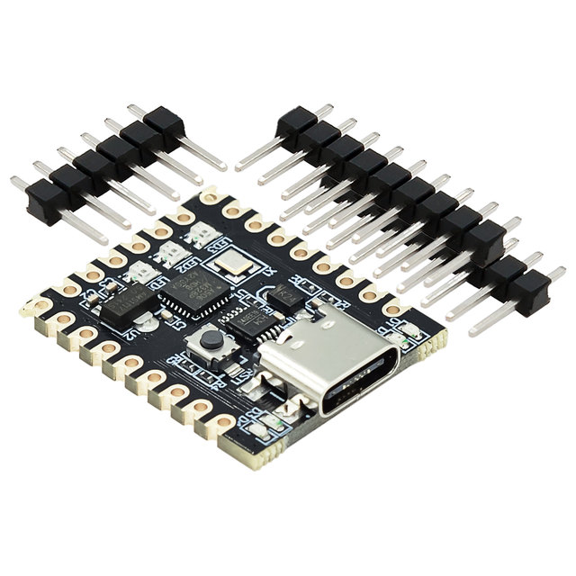
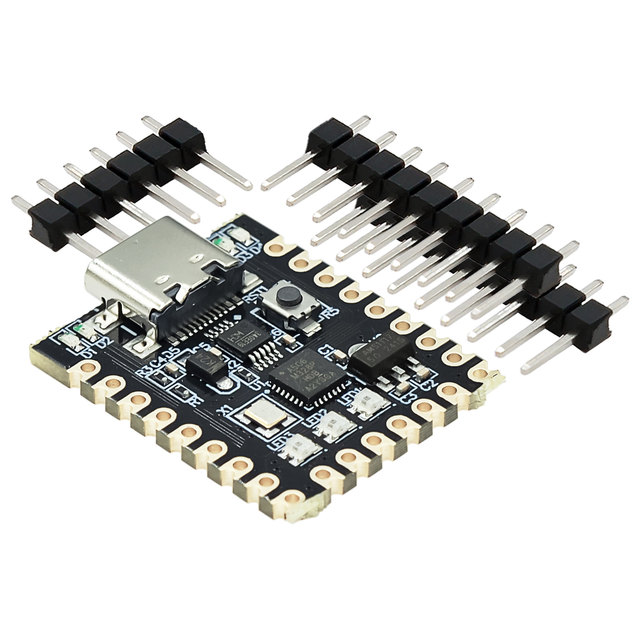
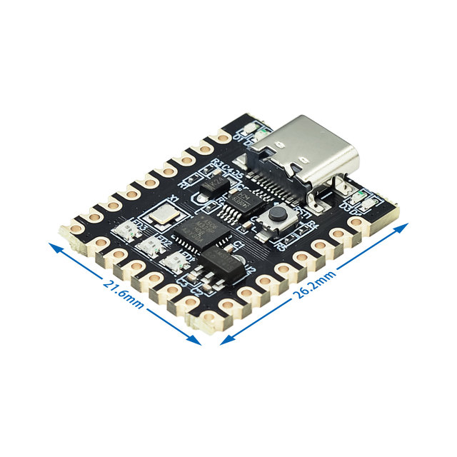
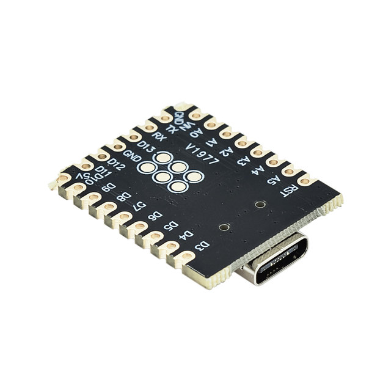
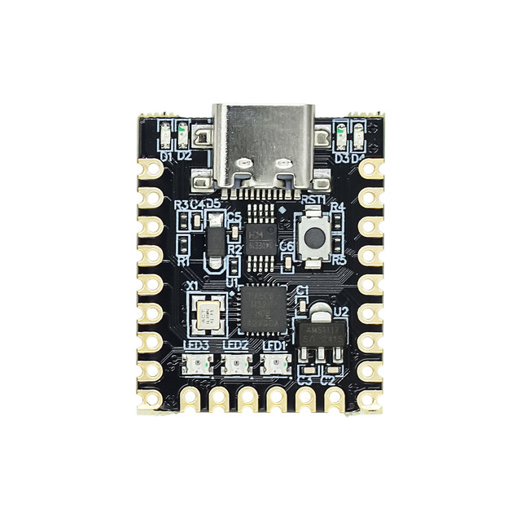
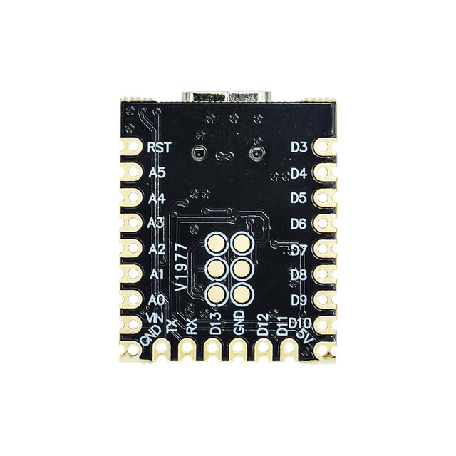

[Introduction]
The SuperMini Nano328P inherits the advantages of the Arduino development board with its compact size and powerful performance. The SuperMini Nano328P uses an ATmega328P microcontroller with a clock rate of 16 MHz and 32KB
Flash memory and 2KB of SRAM. The SuperMini Nano328P supports a variety of input and output interfaces, including digital pins, analog pins, PWM pins, and serial communication interfaces, making it adaptable to the needs of various electronic projects.
[parameter]
name
SuperMini Nano328P
USB chip
CH340E
Input voltage
USB5V/DC6~1 2V
Output power supply
3.3 V ~ 5 V
5V maximum supply current
1A
Dummy port
6 (A0-A5)
Digital port
14 (PWM interface :3, 5, 6, 9, 10, 11)





